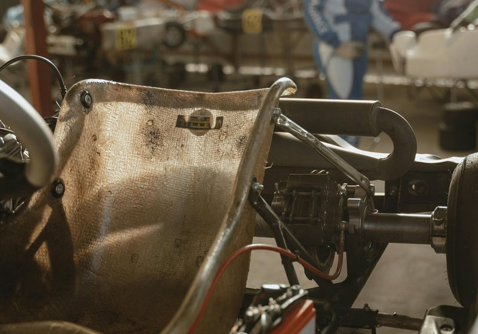

Nos prestations de service
Une gamme complète pour répondre à tous vos besoins
Notre approche personnalisée et notre expertise garantissent des solutions efficaces et adaptées à chaque projet.

Installation et ajustement
Installation professionnelle et ajustement précis de side-cars sur motos, tous modèles de moto. Profitez d'une conduite stable et sécuritaire.

Entretien et réparation
Entretien régulier et réparation experte de votre moto BMW et side-car. Prolongez la durée de vie de votre équipement.

Fabrication sur mesure
Conception et fabrication de side-cars personnalisés pour motos BMW. Créez le side-car de vos rêves avec nous.